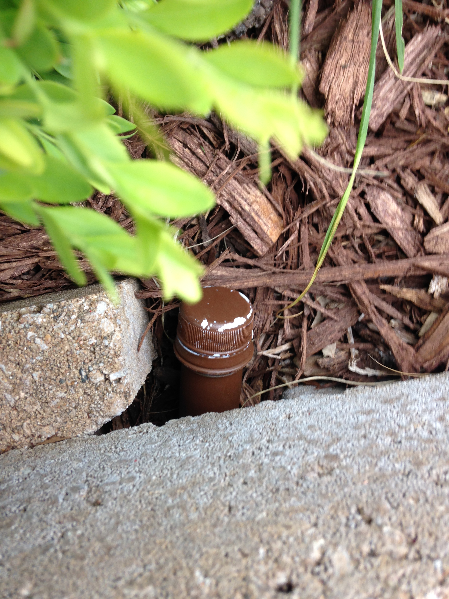

2. Geocache Details
2.1. GC1HNNQ Fried Ornithology
The trick to this one was to listen to the songs....
Sure, it isn't much fun, but eventually you come up with these answers:
Song 1 Eastern Blue Bird Song 2 Blue Jay Song 3 Mourning Dove Song 4 Tufted Titmouse Song 5 American Gold Finch Song 6 Northern Cardinal Song 7 Black Capped Chickadee Song 8 Red Bellied Woodpecker Picture A Red Bellied Woodpecker Picture B American Gold Finch Picture C Mourning Dove Picture D Eastern Blue Bird Picture E Cardinal Picture F Tufted Titmouse Picture G Black Capped Chickadee Picture H Blue Jay http://www.allaboutbirds.org/guide/Eastern_Bluebird/sounds etc.
Matching those results against the table:

I got these results:
A=6 B=1 C=1 D=0 E=7 F=9 G=5 H=8 N 38° 3A.BCD W 092° 1E.FGH N 38° 36.110 W 092° 17.958
2.2. GC2HDZM 3 out of 5
The trick to this one is to look at your standard QWERTY keyboard.
- Take three consecutive letters from ciphertext
- Note that they fall in a straight line on the keyboard
- What letter is either "next" or "missing" from the sequence? That's the cleartext character.
9ij n <-- 'n' is next in the sequence 'nij' 0km o <-- 'o' is missing from the sequence '0km' 4fv r <-- 'r' is missing from the sequence '4fv' 5gb t 6yn h 4ez s -l, p 1qz a 3ed c 3dc e edc 3 uhb 8 5rx d 3dc e 5tb g 4fv r 3dc e 3dc e 4ez s 4ez s -l, p 1qz a 3ed c 3dc e edc 3 edc 3 -l, p 0km o 9jn i 9ij n 5gb t ijn 9 qaz 1 rfv 4 7uj m 9jn i 9ij n 8hb u 5gb t 3dc e 4ez s 2sx w 3dc e 4ez s 5gb t 4ez s -l, p 1qz a 3ed c 3dc e okm 0 ijn 9 wsx 2 5rx d 3dc e 5tb g 4fv r 3dc e 3dc e 4ez s 4ez s -l, p 1qz a 3ed c 3dc e wsx 2 okm 0 -l, p 0km o 9jn i 9ij n 5gb t qaz 1 wsx 2 tfc 6 7uj m 9jn i 9ij n 8hb u 5gb t 3dc e 4ez s zzz z
This results in:
northspace38degreesspace33point914minuteswestspace092degreesspace20point126minutes??
which translates to:
N38° 33.914 W92° 20.126
which Geochecker tells you:
· 3 out of 5 · · GC2HDZM · N 38° 33.914 W 92° 20.126 Success!
2.3. GC3N3NY Drawing a Blanc
Here's what I got from listening to the audio and a bit of Googling:
A = Wile E Coyote http://www.imdb.com/character/ch0029626/quotes B = Sylvester the Cat http://www.movie-dialog.com/looney-looney-looney-bugs-bunny-movie/then-one-day-the-end-of-the-road C = Marvin the Martian http://en.wikipedia.org/wiki/Marvin_the_Martian D = Pepe le Pew E = Foghorn Leghorn F = Barney Rubble G = Yosemite Sam http://www.imdb.com/title/tt0082679/quotes Y = Cosmo S. Spacely http://www.imdb.com/character/ch0000623/ ==== A = 4 B = 9 C = 6 D = 4 E = 7 F = 6 G = 8/3? == could be Yosemite or Sam Y = 5 H = Voice C - Voice D = 6 - 4 = 2 Z = Voice A x Voice Y = 4 * 5 = 20 Know that parking is easily passed on the road and the entrance may be found at N 38° 54.DGC W 92° Z.FGE. The geocache itself is concealed here: N 38° 54.ABH W 92 Z.EFG. ==== Parking: N38 54.DGC W92 Z.FGE N38 54.486 W92 20.687 <== this looks good for the entrance to the parking area Geocache: N38 54.ABH W92 Z.EFG N38 54.492 W92 20.768 ==== If you take "Yosemite" as a first name, you get the values shown above. The parking lot entrance coordinates seem to corroborate the value.
2.4. GC6CKHJ Dots
Nothing in the cache description said that the cache is anywhere other than at the posted location. After testing about 60 possible answers, I came to this astounding conclusion and then tested it on GeoChecker.
Congratulations - your solution is correct!!! Cache Name: Dots GC Code: GC6CKHJ Coordinate: N 38°54.606 W 092°19.602
The coordinates take you to the landscaping blocks around the sign for the Red Oak Plaza mall. We parked on the west side, walked directly to the blocks, reached over and and down... and felt the end of the brown-painted preform where it was tucked in a hole between the blocks.
2.5. GC2QDWG It's Sepia
I got some help from Atomic Goats Breath on this one:
David Bassett 7:24 PM (1 hour ago) to me I hope this helps, it's the page from when I worked it. I don't really find counting pixels all that exciting so I haven't worked too many of these colors, and I guess nobody has solved maple wood so good luck with that one. If you get it you deserve the ftf. If I can ever help you can reach me at 573.489.0350 Goat ====
He sent along a picture, annotated with the circle radii, in pixels

with these results
38 90 87 ==> 38.9087 ==> N38 54.522 92 33 52 ==> 92.3352 ==> W92 20.112 N38 54.522 W92 20.112
Checking with GeoChecker, I got
· It's Sepia (GC2QDWG) · N 38° 54.522 W 92° 20.112 Success! Whoohoo! Yipee! uh-huh, uh-huh! w00t! Yeah, baby! Now, go get it!